library(tidyr)
library(dplyr)
library(ggplot2)
library(lubridate)
library(readxl)
library(ggridges)
library(scales)
library(gt)
library(rmarkdown)
library(quarto)
library(knitr)
library(data.table)
library(ggthemes)
library(viridis)3 Group Project EDA
3.1 Introduction
3.1.1 Load Necessary Packages for EDA
3.1.2 Load Necessary Datasets for EDA
bs <- readRDS("docs/Project_Data/balance_sheet.rds")
i_s <- readRDS("docs/Project_Data/income_statement.rds")
trade_df <- readRDS("docs/Project_Data/trade.rds")
price_df <- readRDS("docs/Project_Data/input_cost.rds")
gdp_df <- readRDS("docs/Project_Data/gdp.rds")3.1.3 Few Data Manipulation Steps to Prepare Data for Final Stage
bs$accounts <- bs$accounts %>% gsub("\\s+", "_", .)
bs_df <- bs %>%
filter(accounts %in% c("I-Current_assets",
"III-Short-term_liabilities",
"IV-Long-term_liabilities",
"Total_assets",
"V-Own_funds")) %>%
pivot_wider(names_from = accounts, values_from = value)
i_s$accounts <- i_s$accounts %>% gsub("\\s+", "_", .)
net_income <- i_s %>%
filter(accounts == "Net_profit_or_loss_for_the_financial_year") %>%
pivot_wider(names_from = accounts, values_from = value) %>%
pull(Net_profit_or_loss_for_the_financial_year)
bs_df <- bs_df %>% mutate(net_income_is = net_income)3.2 Financial Indicators
Liquidity:
\(Current\,Ratio = \frac{Current\,Assets}{Short\,Term\,Liabilities}\)
Leverage:
\(Leverage = \frac{Total\,Loans}{Total\,Assets}\)
Profitability:
\(Return\,on\,Assets = \frac{Net\,Profit}{Total\,Assets}\)
bs_df_new <- bs_df %>%
mutate(current_ratio = bs_df$"I-Current_assets" / bs_df$"III-Short-term_liabilities",
leverage = bs_df$"III-Short-term_liabilities" / bs_df$"Total_assets",
return_on_equity = bs_df$"net_income_is" / bs_df$"V-Own_funds",
return_on_assets = bs_df$"net_income_is" / bs_df$"Total_assets") %>%
select(c(sector_code:year),c(current_ratio:return_on_assets))
bs_df_new <- bs_df_new %>%
pivot_longer(cols = c("current_ratio", "leverage", "return_on_equity", "return_on_assets"),
names_to = "Indicator",
values_to = "Value")3.2.1 Basic Financial Indicators of Turkish Economy
#Calculation and plot of weighted average financial indicators
bs_df_economy <- bs_df %>%
mutate(current_ratio = bs_df$"I-Current_assets" / bs_df$"III-Short-term_liabilities",
leverage = bs_df$"III-Short-term_liabilities" / bs_df$"Total_assets",
return_on_equity = bs_df$"net_income_is" / bs_df$"V-Own_funds",
return_on_assets = bs_df$"net_income_is" / bs_df$"Total_assets") %>%
select(c(sector_code:year),c(current_ratio:return_on_assets), Total_assets)
bs_df_economy_graph <- bs_df_economy %>%
group_by(year) %>%
summarize(Liquidity = weighted.mean(current_ratio, Total_assets) * 100,
Leverage = weighted.mean(leverage, Total_assets) * 100,
Profitability = weighted.mean(return_on_assets, Total_assets) * 100)
bs_df_economy_graph %>%
pivot_longer(-year, names_to = "indicator_yearly", values_to = "value") %>%
ggplot(aes(x = year, y = value)) +
geom_line() +
facet_wrap(~indicator_yearly, scales = "free") +
theme_bw() +
labs(y = "Levels", title = "Weighted Average of Financial Indicators")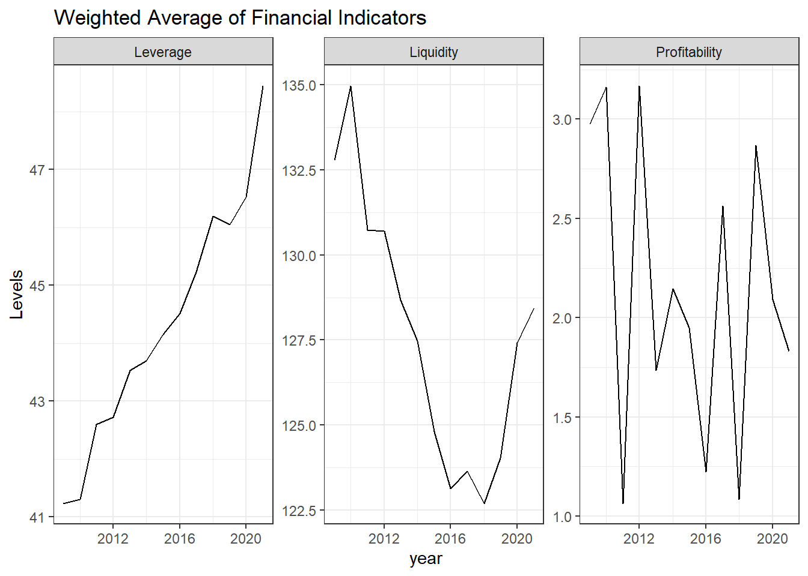
#Calculation and plot of standard deviation of financial indicators
bs_df_economy %>%
group_by(year) %>%
summarize(Liquidity = sd(current_ratio) * 10,
Leverage = sd(leverage) * 10,
Profitability = sd(return_on_assets) * 10) %>%
pivot_longer(-year, names_to = "std_yearly", values_to = "value") %>%
ggplot(aes(x = year, y = value)) +
geom_line() +
facet_wrap(~std_yearly, scales = "free") +
theme_bw()+
labs(y = "Levels", title = "Standard Deviation of Financial Indicators")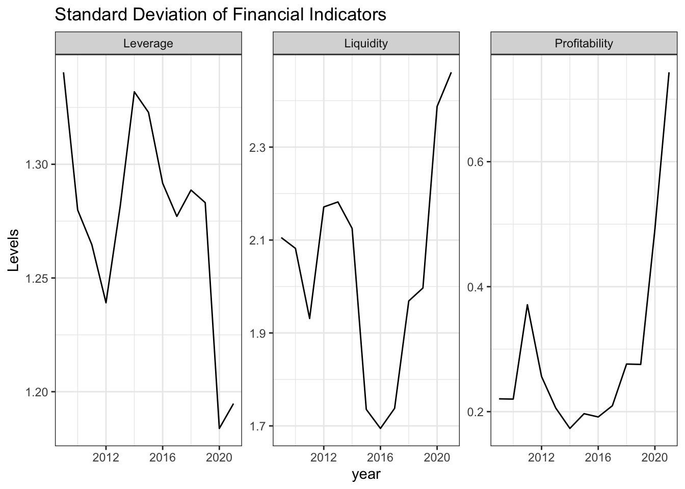
3.2.2 Table of financial indicators for the economy from 2009 to 2021
colnames(bs_df_economy_graph) <- c("Year", "Liquidity", "Leverage", "Profitability")
bs_df_economy_graph[,2:4] <- lapply(bs_df_economy_graph[,2:4],
FUN = function(x) round(x, 2))
kable(bs_df_economy_graph)| Year | Liquidity | Leverage | Profitability |
|---|---|---|---|
| 2009 | 132.77 | 41.23 | 2.98 |
| 2010 | 134.97 | 41.31 | 3.16 |
| 2011 | 130.74 | 42.60 | 1.06 |
| 2012 | 130.70 | 42.72 | 3.17 |
| 2013 | 128.67 | 43.53 | 1.74 |
| 2014 | 127.47 | 43.70 | 2.14 |
| 2015 | 124.81 | 44.15 | 1.95 |
| 2016 | 123.14 | 44.52 | 1.23 |
| 2017 | 123.65 | 45.23 | 2.56 |
| 2018 | 122.70 | 46.20 | 1.08 |
| 2019 | 124.03 | 46.05 | 2.87 |
| 2020 | 127.41 | 46.52 | 2.09 |
| 2021 | 128.45 | 48.45 | 1.83 |
3.2.3 Time Series of Financial Indicators for each sector
ggplot(data = bs_df_new[bs_df_new$Indicator == "current_ratio",], aes(x = year, y = Value)) +
geom_line() +
labs(title = "Liquidity Indicator of Real Sector Companies from 2009 to 2021", x = "Year") +
facet_wrap(~sector_name, scales = "free") +
theme(panel.grid = element_blank()) +
theme_bw()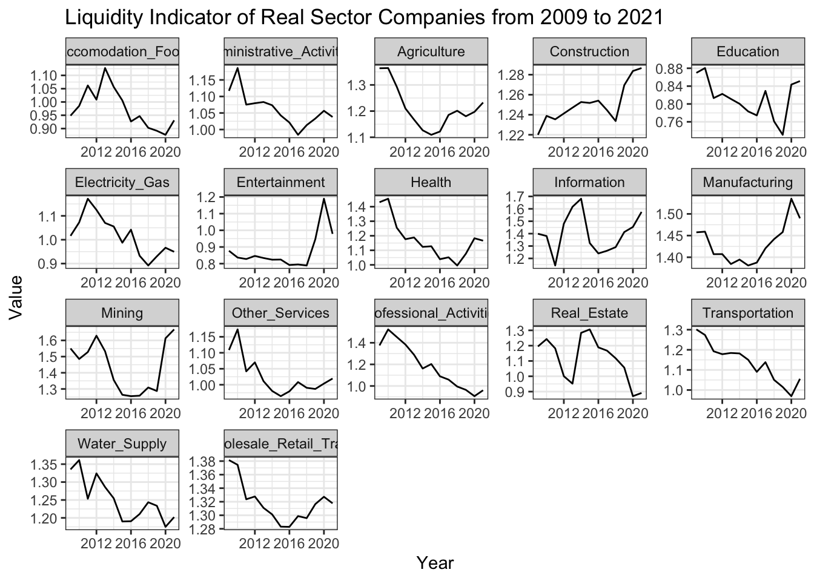
ggplot(data = bs_df_new[bs_df_new$Indicator == "leverage",], aes(x = year, y = Value)) +
geom_line() +
labs(title = "Leverage Indicator of Real Sector Companies from 2009 to 2021", x = "Year") +
facet_wrap(~sector_name, scales = "free") +
theme(panel.grid = element_blank()) +
theme_bw()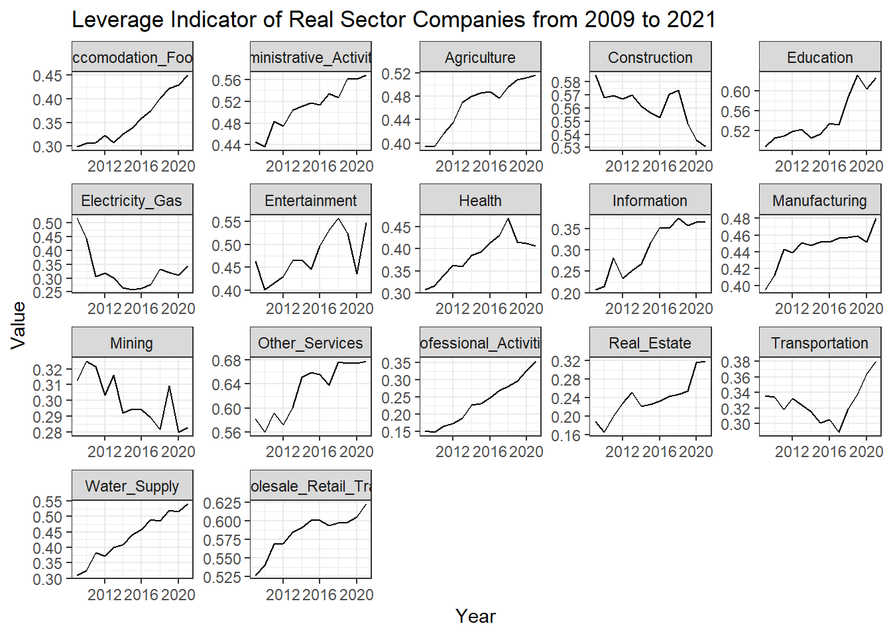
ggplot(data = bs_df_new[bs_df_new$Indicator == "return_on_assets",], aes(x = year, y = Value)) +
geom_line() +
labs(title = "Profitability (ROA) Indicator of Real Sector Companies from 2009 to 2021", x = "Year") +
facet_wrap(~sector_name, scales = "free") +
theme(panel.grid = element_blank()) +
theme_bw()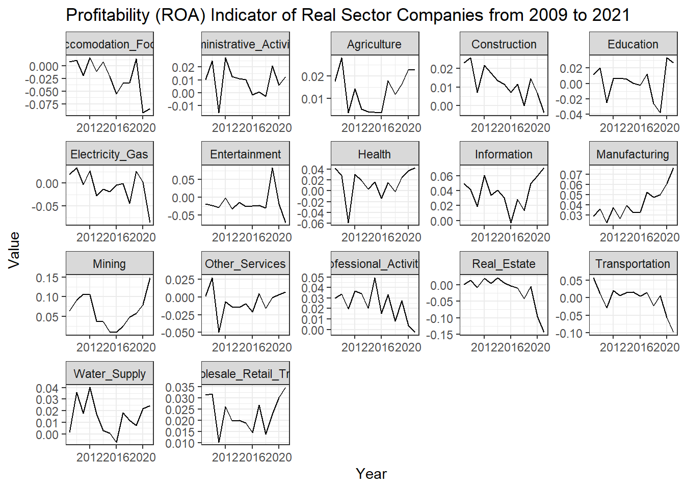
3.2.4 Scatter Plots of Financial Indicators
bs_df_new %>%
pivot_wider(names_from = "Indicator", values_from = "Value") %>%
ggplot(aes(x = leverage, y = current_ratio, color = sector_name)) +
geom_point() +
geom_smooth(method='lm', formula= y~x, se = FALSE) +
labs(title = "Liquidity vs Leverage", y = "Liquidity") +
theme_bw()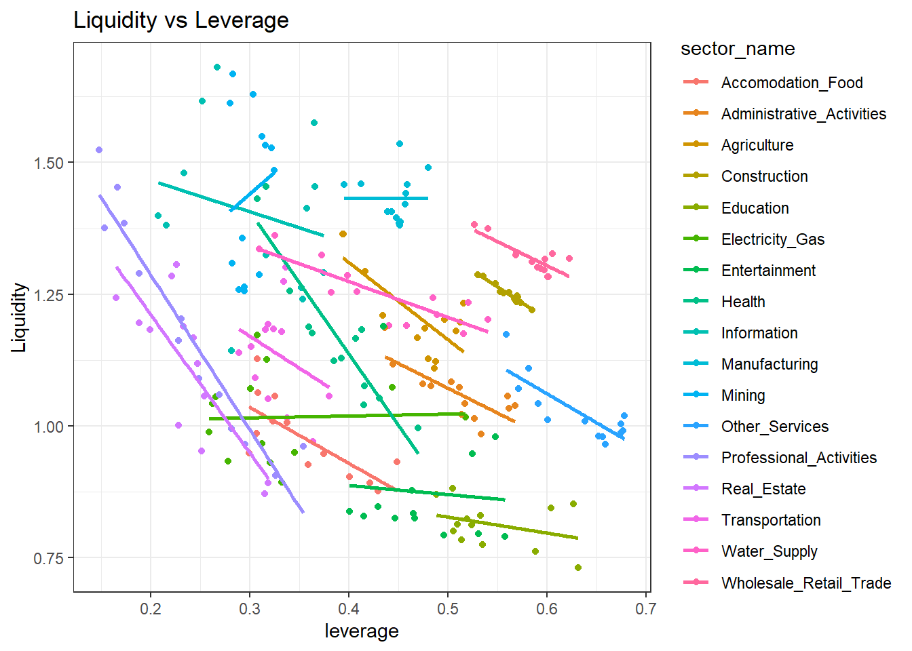
bs_df_new %>%
pivot_wider(names_from = "Indicator", values_from = "Value") %>%
ggplot(aes(x = current_ratio, y = return_on_assets, color = sector_name)) +
geom_point() +
geom_smooth(method='lm', formula= y~x, se = FALSE) +
labs(title = "Profitability vs Liquidity", y = "Profitability", x = "Liquidity") +
theme_bw()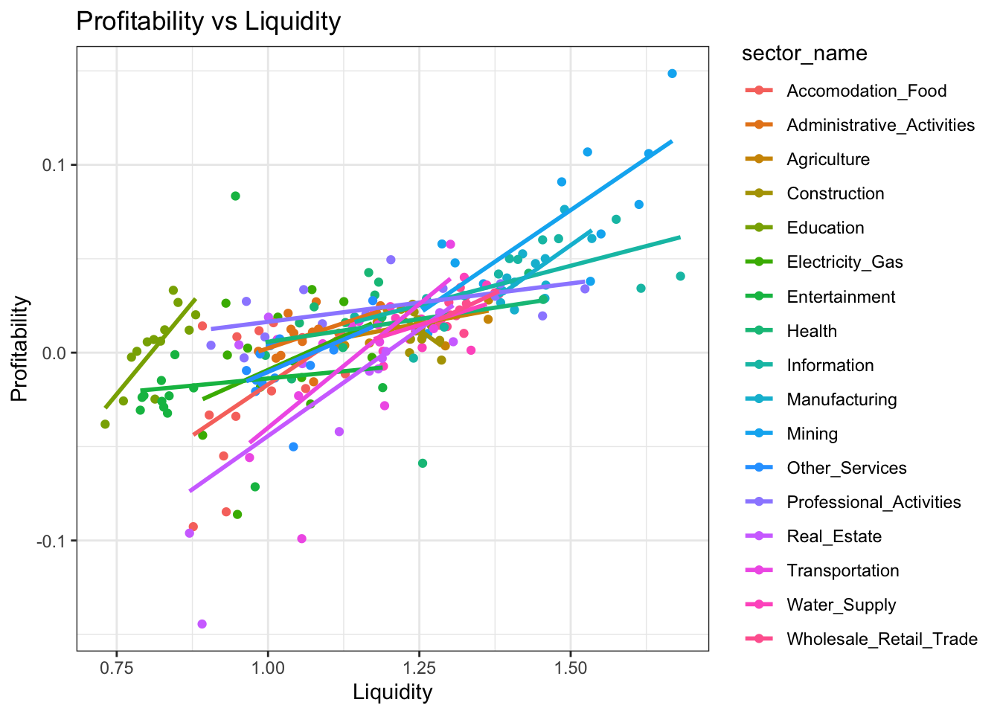
bs_df_new %>%
pivot_wider(names_from = "Indicator", values_from = "Value") %>%
ggplot(aes(x = leverage, y = return_on_assets, color = sector_name)) +
geom_point() +
geom_smooth(method='lm', formula= y~x, se = FALSE) +
labs(title = "Profitability vs Leverage", y = "Profitability") +
theme_bw()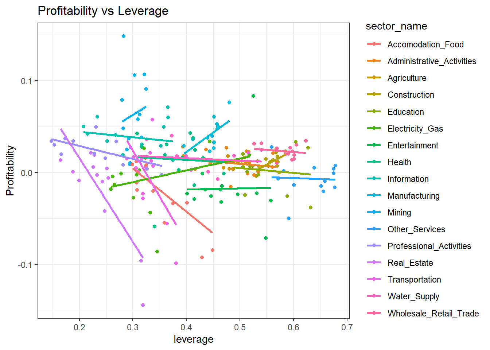
3.2.5 2009 - 2019 Period Average of Financial Indicators
Liquidity Indicator
bs_df_average <- bs_df_new %>%
pivot_wider(names_from = Indicator, values_from = Value) %>%
filter(year %in% 2009:2019) %>%
group_by(sector_name) %>%
summarise(liq_ave = mean(current_ratio), lev_ave = mean(leverage), pro_ave = mean(return_on_assets))
bs_df_new %>%
pivot_wider(names_from = Indicator, values_from = Value) %>%
filter(year %in% 2020:2021) %>%
select(c(sector_name, year, current_ratio)) %>%
pivot_wider(names_from = year, values_from = current_ratio) %>%
left_join(bs_df_average[,c("sector_name", "liq_ave")], by = "sector_name") %>%
rename("2009_2019_average" = "liq_ave") %>%
pivot_longer(-sector_name, names_to = "period") %>%
ggplot(aes(x = sector_name, y = value, fill = factor(period))) +
geom_col(position = "dodge2")+
coord_flip() +
labs(y = "Current Ratio", x = "Sectors", title = "Liquidity Indicator", fill = "Years") +
theme_bw()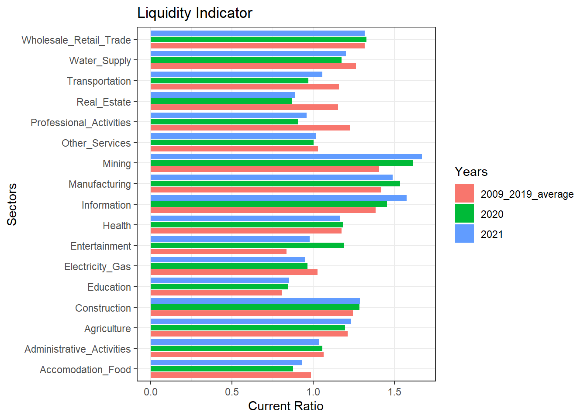
Leverage Indicator
bs_df_new %>%
pivot_wider(names_from = Indicator, values_from = Value) %>%
filter(year %in% 2020:2021) %>%
select(c(sector_name, year, leverage)) %>%
pivot_wider(names_from = year, values_from = leverage) %>%
left_join(bs_df_average[,c("sector_name", "lev_ave")], by = "sector_name") %>%
rename("2009_2019_average" = "lev_ave") %>%
pivot_longer(-sector_name, names_to = "period") %>%
ggplot(aes(x = sector_name, y = value, fill = factor(period))) +
geom_col(position = "dodge2")+
coord_flip() +
labs(y = "Leverage", x = "Sectors", title = "Leverage Indicator", fill = "Years") + theme_bw() 
Profitability Indicator
bs_df_new %>%
pivot_wider(names_from = Indicator, values_from = Value) %>%
filter(year %in% 2020:2021) %>%
select(c(sector_name, year, return_on_assets)) %>%
pivot_wider(names_from = year, values_from = return_on_assets) %>%
left_join(bs_df_average[,c("sector_name", "pro_ave")], by = "sector_name") %>%
rename("2009_2019_average" = "pro_ave") %>%
pivot_longer(-sector_name, names_to = "period") %>%
ggplot(aes(x = sector_name, y = value, fill = factor(period))) +
geom_col(position = "dodge2")+
coord_flip() +
labs(y = "Profitability", x = "Sectors", title = "Return on Assets", fill = "Years") +
theme_bw()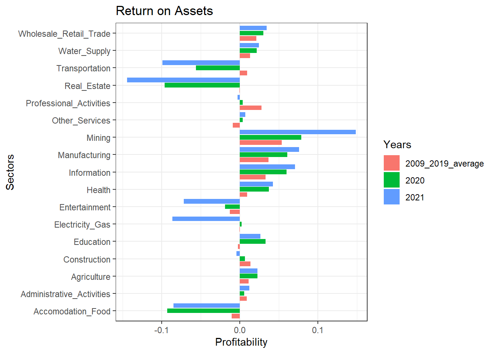
3.2.6 Density Plots of Financial Indicators
# Liquidity
bs_df_new %>% pivot_wider(names_from = Indicator, values_from = Value) %>%
select(year, current_ratio) %>%
arrange(year) %>%
ggplot(aes(x = current_ratio, y = factor(year), fill = stat(quantile))) +
stat_density_ridges(quantile_lines = FALSE,
calc_ecdf = TRUE,
geom = "density_ridges_gradient", rel_min_height = 0.005) +
scale_fill_brewer(name = "") +
labs(y = "Year", x = "Liquidity")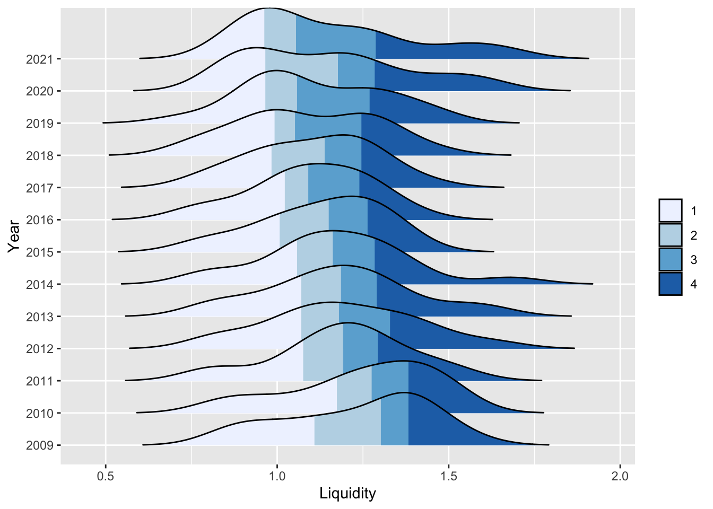
# Leverage
bs_df_new %>% pivot_wider(names_from = Indicator, values_from = Value) %>%
select(year, leverage) %>%
arrange(year) %>%
ggplot(aes(x = leverage, y = factor(year), fill = stat(quantile))) +
stat_density_ridges(quantile_lines = FALSE,
calc_ecdf = TRUE,
geom = "density_ridges_gradient", rel_min_height = 0.005) +
scale_fill_brewer(name = "") +
labs(y = "Year", x = "Leverage")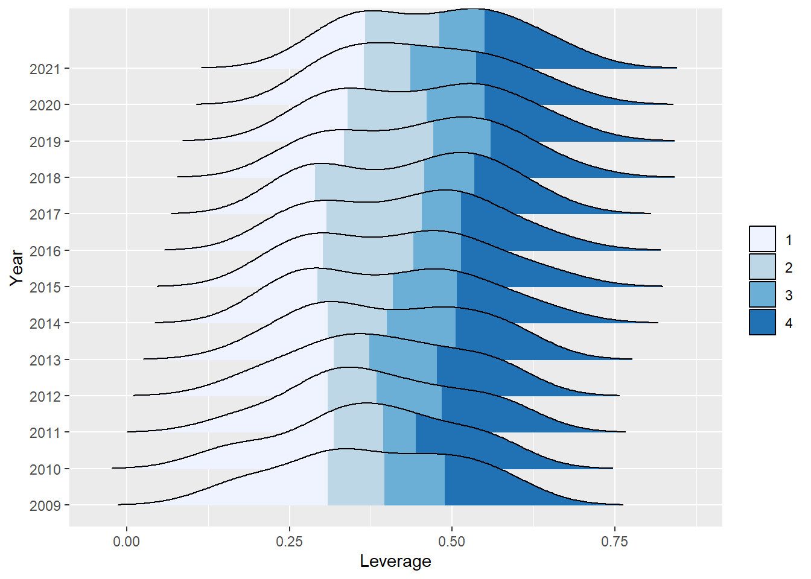
# Profitability
bs_df_new %>% pivot_wider(names_from = Indicator, values_from = Value) %>%
select(year, return_on_assets) %>%
arrange(year) %>%
ggplot(aes(x = return_on_assets, y = factor(year), fill = stat(quantile))) +
stat_density_ridges(quantile_lines = FALSE,
calc_ecdf = TRUE,
geom = "density_ridges_gradient", rel_min_height = 0.005) +
scale_fill_brewer(name = "") +
labs(y = "Year", x = "Return on Assets")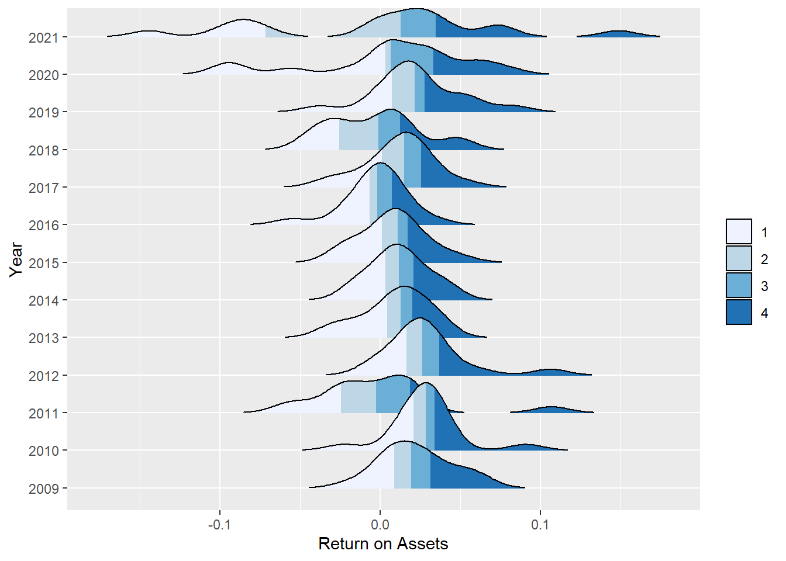
3.3 Financial Fragility Index
bs_df_ffi <- bs_df_new %>%
pivot_wider(names_from = "Indicator", values_from = "Value") %>%
group_by(year) %>%
mutate(liq_rank = percent_rank(current_ratio*-1),
lev_rank = percent_rank(leverage),
profit_rank = percent_rank(return_on_assets*-1)) %>%
mutate(fin_fra_index = (liq_rank + lev_rank + profit_rank)/3) %>%
select(-c(current_ratio:return_on_assets))
bs_df_ffi %>%
select(c(sector_name, year, fin_fra_index)) %>%
pivot_longer(-c(sector_name, year), names_to = "index", values_to = "value") %>%
ggplot(aes(x = year, y = value)) +
geom_line() +
facet_wrap(~sector_name, scales = "free") +
labs(y = "Financial Fragility Index") +
theme_bw()
3.3.1 Heatmap for 2021
heatmap_df <- bs_df_economy %>%
filter(year == 2021) %>%
select(sector_name, current_ratio, leverage, return_on_assets) %>%
mutate(ffi = bs_df_ffi %>% select(year, sector_name, fin_fra_index) %>% filter(year == 2021) %>% pull(fin_fra_index)) %>%
arrange(desc(ffi))
colnames(heatmap_df) <- c("Sectors", "Liquidity", "Leverage", "Profitability", "Financial Fragility Index")
heatmap_df[,2:5] <- lapply(heatmap_df[,2:5], FUN = function(x) round(x*100, 2))
heatmap_df %>%
gt() %>%
data_color(columns = 'Liquidity',
colors = col_numeric(palette = c("red", "white", "green"),
domain = c(min(heatmap_df[,2]), max(heatmap_df[,2])))) %>%
data_color(columns = 'Leverage',
colors = col_numeric(palette = c("green", "white", "red"),
domain = c(min(heatmap_df[,3]), max(heatmap_df[,3])))) %>%
data_color(columns = 'Profitability',
colors = col_numeric(palette = c("red", "white", "green"),
domain = c(min(heatmap_df[,4]), max(heatmap_df[,4])))) %>%
data_color(columns = 'Financial Fragility Index',
colors = col_numeric(palette = c("green", "white", "red"),
domain = c(min(heatmap_df[,5]), max(heatmap_df[,5]))))| Sectors | Liquidity | Leverage | Profitability | Financial Fragility Index |
|---|---|---|---|---|
| Education | 85.13 | 62.71 | 2.67 | 75.00 |
| Entertainment | 97.87 | 54.81 | -7.14 | 72.92 |
| Other_Services | 101.94 | 67.83 | 0.73 | 72.92 |
| Accomodation_Food | 93.09 | 44.88 | -8.47 | 70.83 |
| Real_Estate | 89.10 | 31.88 | -14.45 | 66.67 |
| Administrative_Activities | 103.79 | 56.77 | 1.25 | 62.50 |
| Electricity_Gas | 94.94 | 34.52 | -8.61 | 60.42 |
| Transportation | 105.57 | 38.05 | -9.90 | 58.33 |
| Construction | 128.66 | 53.06 | -0.40 | 52.08 |
| Professional_Activities | 96.05 | 35.40 | -0.28 | 52.08 |
| Water_Supply | 120.21 | 54.04 | 2.45 | 47.92 |
| Agriculture | 123.27 | 51.61 | 2.26 | 43.75 |
| Wholesale_Retail_Trade | 131.77 | 62.30 | 3.46 | 43.75 |
| Health | 116.63 | 40.70 | 4.27 | 33.33 |
| Manufacturing | 148.98 | 48.01 | 7.62 | 22.92 |
| Information | 157.52 | 36.48 | 7.10 | 14.58 |
| Mining | 166.78 | 28.28 | 14.86 | 0.00 |
3.3.2 International Trade
trade_df_new <-
trade_df %>%
mutate(net_export = (export - import)/1e6) %>%
filter(year != 2022) %>%
select(sector_name, year, net_export)
df_fin <- bs_df_new %>% pivot_wider(names_from = Indicator, values_from = Value)
trade_df_new %>%
ggplot(aes(x = year, y = net_export))+
geom_line() +
facet_wrap(~sector_name, scales = "free")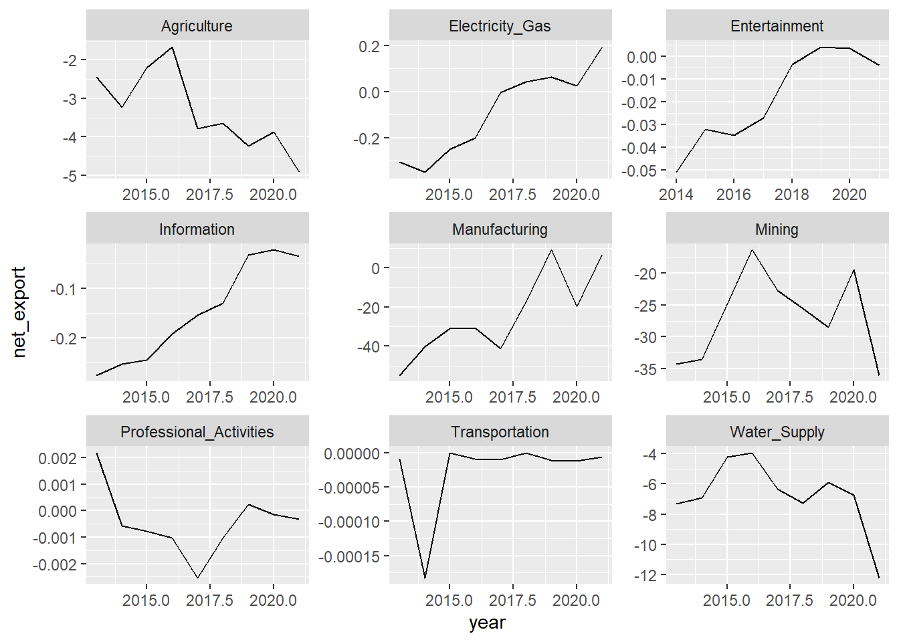
trade_df_new %>%
group_by(sector_name) %>%
summarize(average = round(mean(net_export), 2)) %>%
arrange(average) %>%
kable(caption = "Average Net Exports")| sector_name | average |
|---|---|
| Mining | -26.80 |
| Manufacturing | -24.33 |
| Water_Supply | -6.76 |
| Agriculture | -3.34 |
| Information | -0.15 |
| Electricity_Gas | -0.09 |
| Entertainment | -0.02 |
| Professional_Activities | 0.00 |
| Transportation | 0.00 |
trade_df_new %>%
filter(sector_name %in% c("Agriculture", "Manufacturing", "Mining", "Water_Supply")) %>%
inner_join(df_fin %>% select(-sector_code, -group), by = c("sector_name", "year")) %>%
ggplot(aes(x = net_export, y = return_on_assets))+
geom_point() +
geom_smooth(method='lm', formula= y~x, se = FALSE) +
facet_wrap(~sector_name, scales = "free")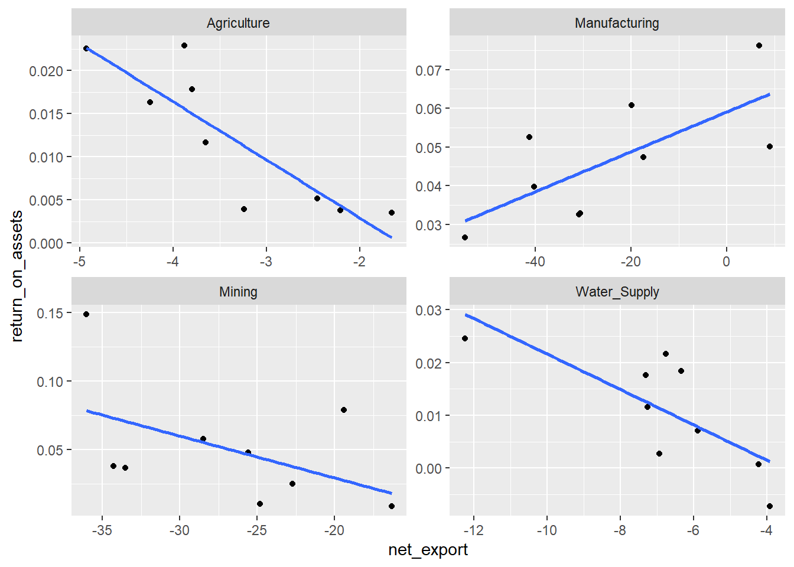
trade_df_new %>%
filter(sector_name %in% c("Agriculture", "Manufacturing", "Mining", "Water_Supply")) %>%
inner_join(df_fin %>% select(-sector_code, -group), by = c("sector_name", "year")) %>% inner_join(bs_df_ffi %>% select(sector_name, year, fin_fra_index), by = c("sector_name", "year")) %>%
ggplot(aes(x = net_export, y = fin_fra_index))+
geom_point() +
geom_smooth(method='lm', formula= y~x) +
facet_wrap(~sector_name, scales = "free")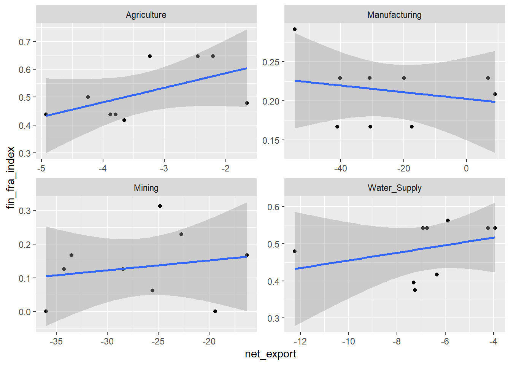
3.3.3 Tradable vs Non-Tradable Sectors
tradables <- c("Agriculture", "Manufacturing", "Mining", "Water_Supply")
df_fin <- df_fin %>% inner_join(bs_df_ffi %>% select(sector_name, year, fin_fra_index), by = c("sector_name", "year"))
df_fin %>%
select(-sector_code, -group) %>%
mutate(trade_group = ifelse(sector_name %in% tradables, "tradable", "non_tradable")) %>%
group_by(year, trade_group) %>%
summarize(financial_fragility_index = mean(fin_fra_index)) %>%
ggplot(aes(year, financial_fragility_index, color = trade_group)) +
geom_line()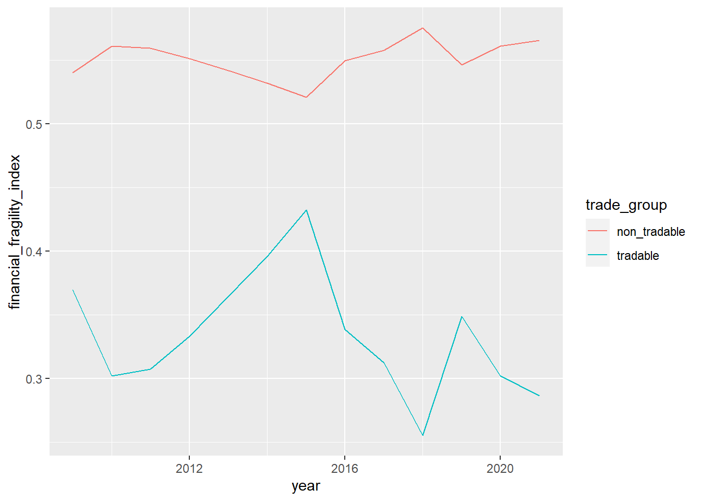
3.3.4 Producer Price Inflation
For each sector, average increases in producer prices (aka input costs) is calculated and given in the table below.
Table shows average increases in input costs of sectors in Turkey from 2017 to 2021.
Top 3 sectors with highest average price increases are Electricity-Gas, Manufacturing and Transportation with average price increases %23.4, %20.2 and %19.5 consecutively.
Information sector is the one experiencing the lowest inrease in its inputs.
pct_change <- function(x){(x / lag(x, 12) -1)*100}
price_df <- price_df %>% filter(date >= as.Date("2017-01-01") & date < as.Date("2022-01-01")) %>%
select(-sector_code, -group) %>%
pivot_wider(names_from = sector_name, values_from = index)
price_change_df <- cbind(date = price_df$date, sapply(price_df[,2 : 11], pct_change) %>% as_tibble())
year_end_inf <- price_change_df %>%
filter(!is.na(Mining) & month(date) == 1) %>%
pivot_longer(-date, names_to = "sector_name", values_to = "inflation")
year_end_inf$date <- year(year_end_inf$date)
year_end_inf <- rename(year_end_inf, "year" = "date")
#Average Inflation for the period 2018-2021
table_inflation <- year_end_inf %>%
group_by(sector_name) %>%
summarize(average_inflation = round(mean(inflation),2)) %>%
arrange(desc(average_inflation))
colnames(table_inflation) <- c("Sector Name", "Inflation (%, YoY)")
kable(table_inflation, caption = "Average Increases in Input Costs")| Sector Name | Inflation (%, YoY) |
|---|---|
| Electricity_Gas | 23.44 |
| Manufacturing | 20.15 |
| Transportation | 19.49 |
| Administrative_Activities | 17.89 |
| Accomodation_Food | 17.28 |
| Mining | 17.04 |
| Professional_Activities | 14.38 |
| Real_Estate | 11.53 |
| Water_Supply | 9.76 |
| Information | 3.70 |
3.3.5 Financial Indicators with Inflation data
inner_join(bs_df_new %>%
select(-sector_code, -group) %>%
pivot_wider(names_from = Indicator, values_from = Value) %>%
filter(year >= 2018), year_end_inf, by = c("sector_name", "year")) %>%
filter(inflation < 50) %>% # Omit outlier observation
ggplot(aes(x = inflation, y = return_on_assets)) +
geom_point() +
geom_smooth(method='lm', formula= y~x, se = FALSE)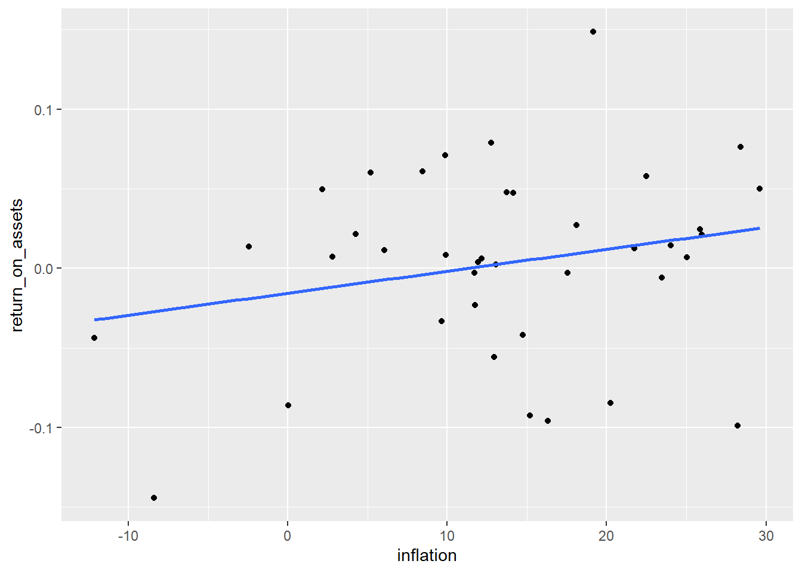
3.3.6 Growth Dynamics
gdp_df$pct_change <- (gdp_df$gdp_index / lag(gdp_df$gdp_index, 1) - 1) * 100
gdp_df <- gdp_df %>% filter(!is.na(pct_change) & year >= 2009)
# Real GDP Growth Summary Table
gdp_df_tb <- gdp_df
setDT(gdp_df)
gdp_df[, as.list(summary(pct_change)), by = sector] sector
1: Total
2: A- Agriculture, forestry and fishing
3: BCDE- Industry
4: C- Manufacturing
5: F- Construction
6: GHI- Services
7: J- Information and communication
8: K- Financial and insurance activities
9: L- Real estate activities
10: MN- Professional, administrative and support service activities
11: OPQ- Public administration, education, human health and social work activities
12: RST- Other service activities
Min. 1st Qu. Median Mean 3rd Qu. Max.
1: -4.8395779 3.0774892 4.886660 5.160433 8.592330 11.602185
2: -2.9425309 2.1253483 3.300360 3.089001 4.919164 9.256697
3: -8.4482154 3.0346335 5.013533 5.891598 9.686020 17.412060
4: -8.6292531 2.0623298 5.608743 6.006734 9.541860 19.967008
5: -15.9068747 -1.8675766 4.948874 4.295708 9.372647 24.878645
6: -10.2595397 1.2391890 6.406098 5.480158 8.243056 21.342332
7: -2.1329458 5.0496912 6.798608 7.824746 9.225318 21.950574
8: -6.2618952 3.0949580 7.524540 9.466583 10.227967 30.157813
9: -0.1600322 2.3612458 2.792944 2.943916 3.599191 4.933052
10: -5.1717142 -0.1843973 8.222537 6.748606 12.052047 16.967597
11: 1.2629144 2.9946977 4.645327 4.531002 5.360318 10.147852
12: -0.3814016 4.2987391 5.805904 7.307440 8.562325 24.807844gdp_df_tb$sector <- gdp_df_tb %>%
select(-gdp_index) %>% .$sector %>% gsub("-.*", "", .)
bs_df_new <- bs_df_new %>% pivot_wider(names_from = Indicator, values_from = Value) %>%
left_join(bs_df_ffi %>% select(sector_code, year, fin_fra_index), by = c("sector_code", "year")) %>%
pivot_longer(-c(sector_code : year), names_to = "Indicator", values_to = "Value")
fin_ind_group <- bs_df_new %>%
select(sector_code, year, Indicator, Value) %>%
mutate(group = case_when(sector_code == "A" ~ "A",
sector_code %in% c("B", "C", "D", "E") ~ "BCDE",
sector_code == "F" ~ "F",
sector_code %in% c("G", "H", "I") ~ "GHI",
sector_code == "J" ~ "J",
sector_code == "L" ~ "L",
sector_code %in% c("M", "N") ~ "MN",
TRUE ~ "other")) %>%
filter(group != "other") %>%
left_join(bs_df %>% select(sector_code, year, Total_assets), Total_assets, by = c("sector_code", "year")) %>%
select(-sector_code) %>%
group_by(group, year, Indicator) %>%
summarise(value = weighted.mean(Value, Total_assets)) %>% pivot_wider(names_from = Indicator, values_from = value)
header <- c("A", "BCDE", "F", "GHI", "J", "L", "MN")
names <- c("Agriculture", "Industry", "Construction", "Services", "Information", "Real Estate", "Other Services")
growth_info <- data.frame(header, names)
growth_df <- left_join(fin_ind_group, gdp_df_tb %>% select(-gdp_index),by = c("group" = "sector", "year"))
growth_df <- growth_df %>%
left_join(growth_info, by = c("group" = "header"))
growth_df %>%
ggplot(aes(lag(pct_change,1), fin_fra_index)) +
geom_point() +
facet_wrap(~names, scales = "free") +
geom_smooth(method='lm', formula= y~x, se = FALSE)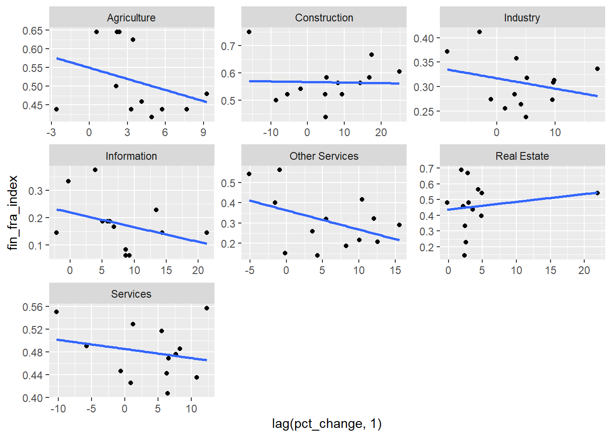
3.4 Sectoral Gender Distribution
#Gender distribution in main sectors that are agriculture, construction, industry and services.
emp_data <- readRDS("docs/Project_Data/employment.rds")
table <- emp_data %>%
group_by(group, gender) %>%
arrange(sector_name) %>%
mutate("value") %>%
summarise(value=sum(number))
table# A tibble: 8 × 3
# Groups: group [4]
group gender value
<chr> <chr> <dbl>
1 Agriculture female 14311
2 Agriculture male 20094
3 Construction female 616
4 Construction male 11822
5 Industry female 11093
6 Industry male 33554
7 Services female 34383.
8 Services male 60572.ggplot(table, aes(x=group, y=value, fill=gender)) +
geom_bar(stat='identity', position='dodge')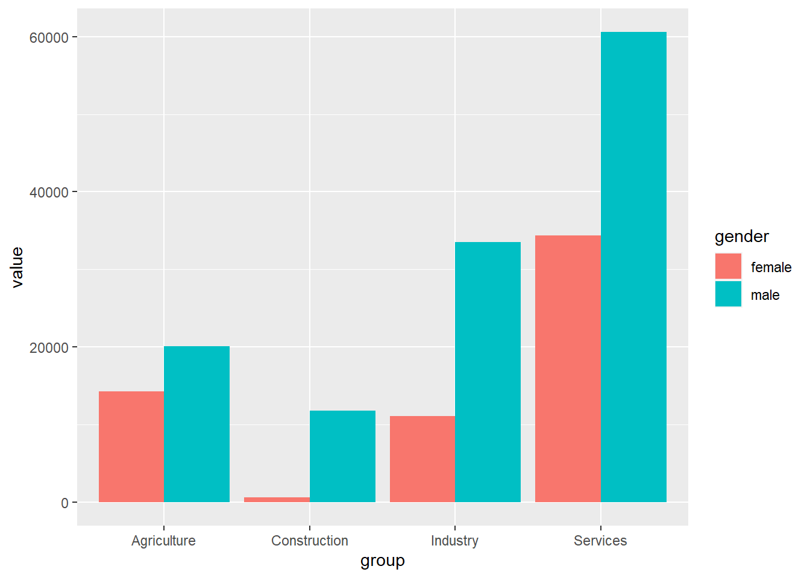
#Detailed gender distribution
emp_data <- readRDS("docs/Project_Data/employment.rds")
table_2 <- emp_data %>%
group_by(sector_name, gender) %>%
arrange(sector_name) %>%
mutate("value") %>%
summarise(value=sum(number))
ggplot(table_2, aes(x=sector_name, y=value, fill=gender)) +
geom_bar(stat='identity', position='dodge') +
theme(axis.text.x = element_text(angle=90, hjust=1))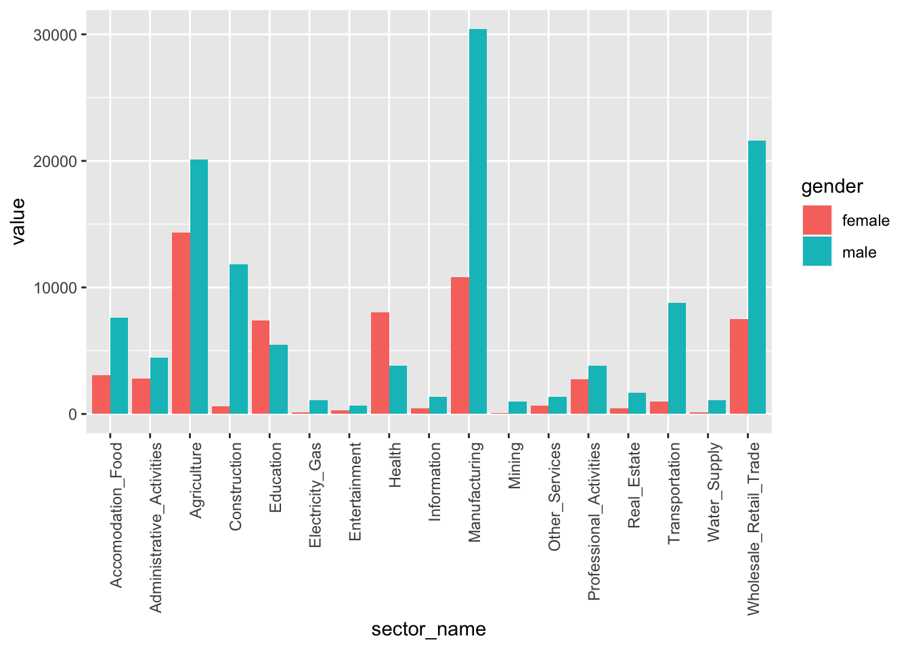
#Percentage of the number of employees in the sectors
emp_data <- readRDS("docs/Project_Data/employment.rds")
table_3 <- emp_data %>%
group_by(sector_name) %>%
arrange(sector_name) %>%
mutate("value") %>%
summarise(value=sum(number))
total = sum(table_3$value)
table_4 <- table_3 %>%
group_by(sector_name) %>%
arrange(sector_name) %>%
mutate("percentage") %>%
summarise(percentage=100*value/total)
table_4# A tibble: 17 × 2
sector_name percentage
<chr> <dbl>
1 Accomodation_Food 5.73
2 Administrative_Activities 3.89
3 Agriculture 18.5
4 Construction 6.67
5 Education 6.90
6 Electricity_Gas 0.640
7 Entertainment 0.504
8 Health 6.37
9 Information 0.970
10 Manufacturing 22.1
11 Mining 0.570
12 Other_Services 1.10
13 Professional_Activities 3.49
14 Real_Estate 1.14
15 Transportation 5.24
16 Water_Supply 0.640
17 Wholesale_Retail_Trade 15.6 3.5 Firm Size Comparison by Sector Groups
#Firm size comparison in the sectors; agriculture, construction, industry and services.
options(dplyr.summarise.inform = FALSE)
sectorinf_data <- readRDS("docs/Project_Data/sector_information.rds")
table_sectorinf <- sectorinf_data %>%
filter(number == 'Number_of_companies') %>%
filter(size != 'Total') %>%
group_by(group,size) %>%
mutate("num_of_companies") %>%
summarise(num_of_companies=sum(value)) %>%
arrange(group,desc(size))
table_sectorinf# A tibble: 16 × 3
# Groups: group [4]
group size num_of_companies
<chr> <chr> <dbl>
1 Agriculture Small 18265
2 Agriculture Micro 94969
3 Agriculture Medium 3398
4 Agriculture Large 489
5 Construction Small 307612
6 Construction Micro 982200
7 Construction Medium 58513
8 Construction Large 8144
9 Industry Small 471473
10 Industry Micro 995452
11 Industry Medium 152032
12 Industry Large 45049
13 Services Small 1255079
14 Services Micro 4300865
15 Services Medium 260793
16 Services Large 55289table_sectorinf %>%
ggplot(aes(x=group,y=num_of_companies, fill=size)) +
geom_bar(stat='identity', position='dodge') +
xlab("Number of companies") +
ylab("Sector group")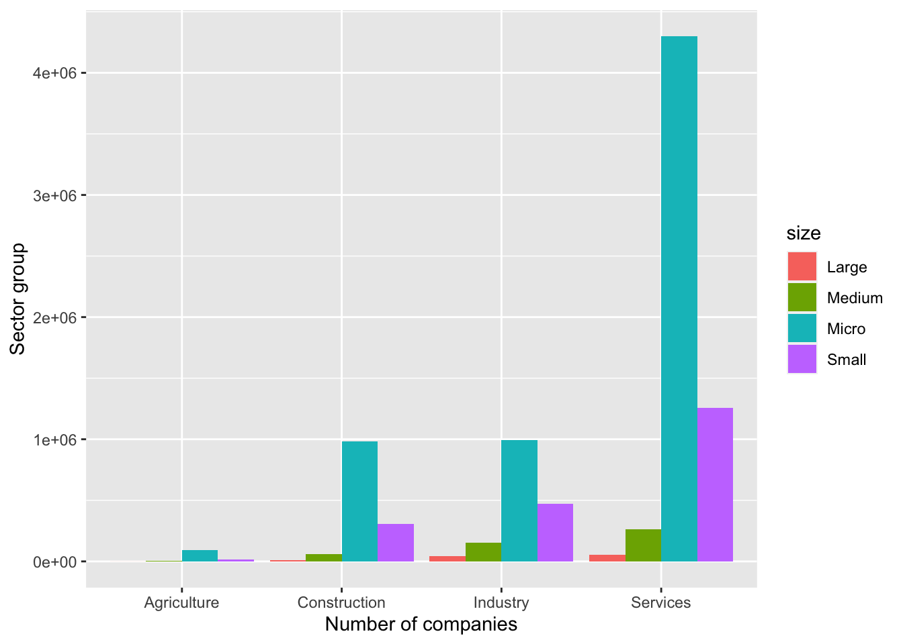
#Firm size comparison by sector names as a detailed version.
table_sectordetail <- sectorinf_data %>%
filter(number == 'Number_of_companies') %>%
filter(size != 'Total') %>%
group_by(sector_name, size) %>%
mutate("num_of_companies") %>%
summarise(num_of_companies=sum(value)) %>%
arrange(sector_name,desc(size))
table_sectordetail# A tibble: 68 × 3
# Groups: sector_name [17]
sector_name size num_of_companies
<chr> <chr> <dbl>
1 Accomodation_Food Small 109977
2 Accomodation_Food Micro 313604
3 Accomodation_Food Medium 20495
4 Accomodation_Food Large 3995
5 Administrative_Activities Small 63121
6 Administrative_Activities Micro 248544
7 Administrative_Activities Medium 27225
8 Administrative_Activities Large 10489
9 Agriculture Small 18265
10 Agriculture Micro 94969
# … with 58 more rowstable_sectordetail %>%
ggplot(aes(y=sector_name,x=num_of_companies, fill=size)) +
geom_bar(stat='identity', position='dodge') +
xlab("Number of companies") +
ylab("Detailed sector group")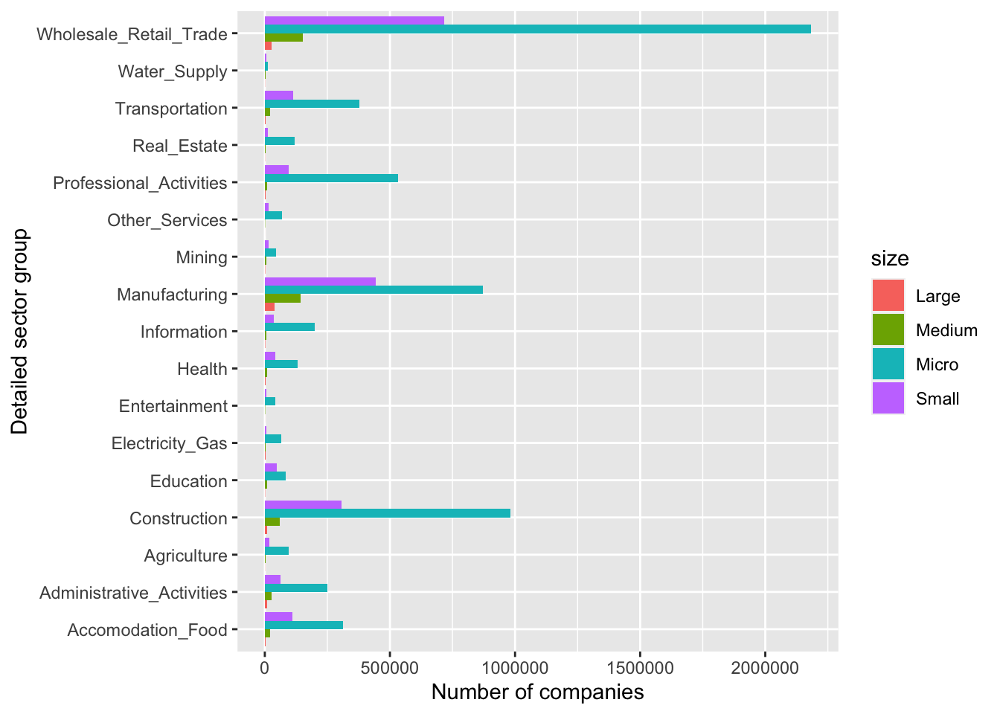